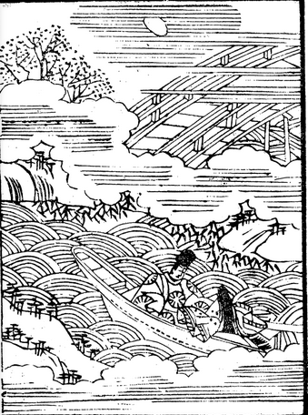
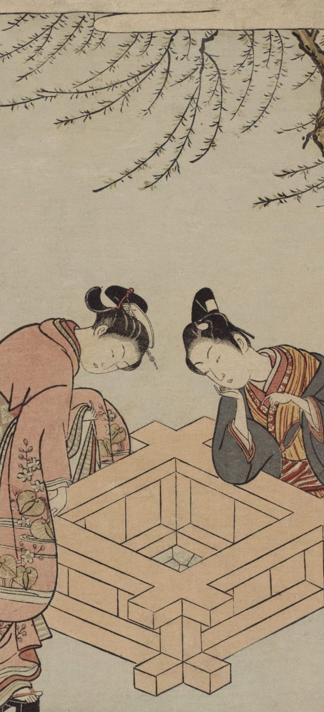

383: '記憶の計量'事件¶
{kind=link}
依頼人¶
常磐線沿線のH市で建設業経営。親から継いだ会社を大きくすることに成功し、少し早いかとも思うが、近々息子に経営をゆずろうと考えている。最近、健康そのものだった友人が急になくなることがあって、これまで手元にたまった物品など少しずつ整理を進めている。
依頼内容¶
若い頃からずっと欠かさず日記をつけてきた。日記と言っても新聞やテレビの情報で気にとめたことのメモである。報道内容やそのときどきの流行に、自分や周囲の人の感想や反応を書き加えただけのものである。ただ、毎日欠かさずつけること、自身の考えたこと、周囲の人の発言を、てらわず、気どらず、その価値を判断せずに記録するという方針を守ってきた。そのかわり、自身の日常の出来事のたぐいはほとんどまったく記載して来なかった。
日記はパソコン上でテキスト・エディターで書いてきた。古いものなどは3.5インチのフロッピー・ディスクに入っていたのを、最近苦労してハードディスクにすべて移し替えた。それをみなプリントアウトして、立派に装丁したい。そのうえで、将来一歴史資料となるにちがいないから、他のものは捨ててもこれだけは捨てるなと遺言するつもりである。
ところが、今回改めて古い記事を読み返していて、まったく記憶にない出来事の記述が出てきた。自分の身辺のことは書かないことを方針として守ってきたのに、その記事だけは、その日の朝に家を出てから夕刻までのことが克明に書いてある。前後の記事を含めて、いずれも日付がはっきりしている。
しかし、記事の内容が自身のこととしては全く記憶にないというのも狐につままれたような気がする。その記事というのが、ごく若い(と思われる)男女がバスと電車を乗り継いで、紅葉のさかりの山里に行き、並んでスケッチをしたり弁当を広げたりするといった類の内容で、読んでいてふと春信の「筒井筒」の絵柄を思い出した [1] 。その時期には、かなりの小遣いをもらっており、ポルシェを乗り回し、女性にも決して初心ではなかったので、とても自身の経験とは思えない。
記事には人名、地名、駅名などの固有名詞がまったく欠けているのも奇妙に感じる。
あるいは、何か理由があって他人の文章を写して、コメントも何もそえずにおいてしまったので、今となっては由来も含めて分からなくなっているのかとも思う。これが間違いなく自身のものかどうか、客観的に判定する方法はないものだろうか。
調査報告¶
依頼に対して、コンピュータを用いた文章の計量分析は、すぐに思いつくひとつのやり方である。品詞や語彙の頻度、さらには、文節の係り受け関係を解析し、文節パターンを点検するといった方法など、かなりの成功例があるらしい。いくつか優れたフリーソフト( [Ref1] , [Ref2] )もあるし、金があるのだから、その分野の専門家に副業として解析してもらっても良いだろう。
しかし、依頼人が本当に知りたいのは、記事の作者が自分かどうかではなくて、記事内容が伝聞や創作ではなくて、自分のことなのかどうかということであるはずだ。その場合は、文章の計量解析で答えが出るとは思えない。さらに、こんなところにわざわざ閑談に来た理由は、その記事内容が仮に自分のことだとしたら、いまの自分としてどう受け止めるべきかということではないか。
とはいえ、計量分析というほどでなくても、特定の言い回し、例えば、それぞれの文をどんな言葉で終えているかを日記全文にわたって検索して、比べてみることなどはもっと簡単にできるし、かえって今のような場合は役に立ちそうに思える [2] 。
一つ例をとってみよう。
古文の終助詞「ばや」は、(1)意思、(2)自己に対する希望・願望、(3)望むものや状態が実は無いという打消し、といった意味で使われる。木谷真理子「光源氏と願望の終助詞」 [Ref3] によると、「ばや」が青年期の光源氏の心内の表現に現れるとき、特徴的な使われ方をしている。光源氏の心内の表現としての「ばや」は、特定の女性と近づきたいという願望がきざすところで使われる。そして、青年光源氏はその願望にしたがって何らかの行動をとるというのである。
「ばや」で源氏物語の全文検索 [3] を行うと、90件ヒットする。そのうち、青年期の光源氏と宇治十帖の薫とのそれぞれについて、「願望の終助詞：ばや」を表に抜き出してみる。宇治十帖ではそれ以前に比べて、「ばや」の出現頻度が顕著に増えている [4] が、主人公の薫について「願望の終助詞」として使われている例は相対的に少ない。
| ID | 巻 | 文 | 備考 |
|---|---|---|---|
| 1 | 桐壷 | 常に参らまほしく、「なづさひ見たてまつらばや」
とおぼえたまふ。
|
|
| 2 | 空蝉 | さて向かひゐたらむを見ばや、と思ひて、やをら歩み出でて、簾のはさまに入りたまひぬ。 | |
| 3 | 夕顔 | 君うち笑みたまひて、「知らばや」と思ほしたり。 | |
| 4 | 夕顔 | 君は、「夢をだに見ばや」と、思しわたるに、・・・ | |
| 5 | 若紫 | 「さても、いとうつくしかりつる児かな。何人ならむ。かの人の御代はりに、明け暮れの慰めにも見ばや」と思ふ心、深うつきぬ。 | |
| 6 | 若紫 | 「人のほどもあてにをかしう、なかなかのさかしら心なく、うち語らひて、心のままに教へ生ほし立てて見ばや」と思す。 | |
| 7 | 若紫 | 「何か、かう繰り返し聞こえ知らする心のほどを、つつみたまふらむ。その言ふかひなき御心のありさまの、あはれにゆかしうおぼえたまふも、契りことになむ、心ながら思ひ知られける。なほ、人伝てならで、聞こえ知らせばや。 ・・・ | |
| 8 | 末摘花 | ・・・げに、心苦しくらうたげならむ人をここに据ゑて、うしろめたう恋しと思はばや。あるまじきもの思ひは、それに紛れなむかし」 | 「あるまじきもの思ひ」は、藤壺への思い。 |
| ID | 巻 | 文 | 備考 |
|---|---|---|---|
| 9 | 橋姫 | なかなか、親王の思ひ澄ましたまへらむ御心ばへを、「対面して、見たてまつらばや」と思ふ心ぞ深くなりぬる。 | |
| 10 | 総角 | ・・・惜しくもおぼゆるあまりに、人びとしくもてなさばやと、あやしきまでもて扱はるるに、・・・ | |
| 11 | 宿木 | 詳しく聞きあきらめたまひて、「さらば、まことにてもあらむかし。見ばや」と思ふ心出で来ぬ。 | |
| 12 | 蜻蛉 | 「などて、年ごろ、見たてまつらばやと思ひつらむ。なかなか苦しう、かひなかるべきわざにこそ」と思ふ。 | 女一宮の姿を偶然目にして |
{kind=link}
しかし、薫の心中表現に「願望の終助詞」が使われるときは、文章が屈折してわかりにくくなるのが特徴であり、「 願望隠蔽の終助詞 」とでもいうような形をとる。
宇治十帖は、世間から忘れられ宇治に隠棲する旧親王の八の宮とその姫君たちの存在を、薫が知るところから物語が動き始める。八の宮と親しい阿闍梨が冷泉院の帝にその近況を語るところに、たまたま薫が居合わせる。
表番号9. 「橋姫」より:
「げに、はた、この姫君たちの、琴弾き合はせて遊びたまへる、川波にきほひて聞こえはべるは、
いとおもしろく、極楽思ひやられはべるや」 と、古体にめづれば、帝ほほ笑みたまひて、
「さる聖のあたりに生ひ出でて、この世の方ざまは、たどたどしからむと推し量らるるを、
をかしのことや。うしろめたく、思ひ捨てがたく、もてわづらひたまふらむを、もし、しばしも
後れむほどは、譲りやはしたまはぬ」などぞのたまはする。
この院の帝は、十の御子にぞおはしましける。朱雀院の、故六条院に預けきこえたまひし、
入道宮の御例を思ほし出でて、「かの君たちをがな。つれづれなる遊びがたきに」などうち思しけり。
中将の君、なかなか、親王の思ひ澄ましたまへらむ御心ばへを、「対面して、見たてまつらばや」
と思ふ心ぞ深くなりぬる。
ここで、薫中将の心中描写で使われている、「なかなか」は解釈がむずかしいと思えるのだが、次のように、冷泉院の帝が八の宮の娘達に興味を持ったのとは違って、という意味を込めたものとしている [5] 。このように言葉を補わないと、姫君たちのことを聞いたあとで、八の宮に対面して「見たてまつらばや」という強い願望が表出されることが、薫の心中の出来事としてつじつまが合わない。
(與謝野晶子訳)
年の若い薫中将はかえって姫君たちの話に好奇心などは動かされずに、
八の宮の悟り澄ましておいでになる御心境ばかりが羨望されて、お目にかかりたいと
深く思うのであった。
(Translation by Edward G. Seidensticker)
Koru was less interested in the daughters than in the father. Quite entranced with
what he had heard, he longed to see for himself that figure so wrapped in the serenity of religion.
「対面して、見たてまつらばや」を生な願望の表出にできないので、「なかなか」と自分に向かって言わなければならない薫の特性は、次の「ばや」の用例にも良く表現されている。この二つの場面の間で物語は次のように進展している。
- 薫は宇治の八の宮をたびたび訪問するようになる。
- 八の宮は薫に娘達の後見を頼む。
- 八の宮の死後、薫は大君(姉)に接近するが、実事にはいたらない。
- 薫は、姉妹に惹かれた匂宮を手引して、中君(妹)を引き渡す。
次は、匂宮を中君に導いた後、匂宮が内裏に禁足を命じられてしまったときの薫の述懐である。
表番号10. 「総角」より、
「わがあまり異様なるぞや。さるべき契りやありけむ。親王のうしろめたしと思したりしさまも、
あはれに忘れがたく、この君たちの御ありさまけはひも、ことなることなくて世に衰へたまはむことの、
惜しくもおぼゆるあまりに、人びとしくもてなさばやと、あやしきまでもて扱はるるに、・・・
(Translated by Seidensticker)
His own eccentric ways had been to blame - and perhaps fate had stepped in.
Unable to forget the Eith Prince's concern for his daughters, sad that such elegance and beauty,
favored by not the smallest stroke of luck, should be wasted, he had been seized
by longing to help them so intense that even to him it had seemed curious.
(サイデンステッカー訳の和訳)
自分が変わりすぎているせいだ・・・運命の巡り合わせかもしれない。
八の宮が娘たちを心配していたことが忘れられず、わずかな幸運にも姫君たちが恵まれないまま、
あれほどの洗練と美が失われることがあってはならないと、薫は、自分でも不思議に思うほど、
二人を助けたいという強い願いに駆られたのだった。
(與謝野晶子訳)
自分があまりに人と変わり過ぎているのである、どんな宿命でか八の宮が姫君たちを気がかりに仰せられた言葉も忘られなかったし、またその女王たちもすぐれた女性であるのを発見してからは、世間に無視されていることがあまりに不合理に惜しいことに思われ、人の幸福な夫人にさせたいことが念頭を去らなかったし、・・・
「・・・人びとしくもてなさばや・・・」の箇所を、サンデンステッカー訳は、"He had been seized by longing to help them so intense ..."とし、與謝野晶子訳の「人の幸福な夫人にさせたいことが念頭を去らなかった」というあっさりした現代訳よりも、薫の願望の屈折した重苦しさを良くとらえている。この述懐の場面の少し後に、薫とのあいだに実事のないまま大君は衰弱死する。
次の例では、やっと、光源氏のそれに近い「願望の終助詞」が薫に現れる。八の宮の姫君たちに異母妹(浮舟)がいることを確認したときの反応である。ただし、あくまでも、死んだ大君の代理対象(ひとがた)としての浮舟への興味が確認されるのである。
表番号11. 「宿木」より、
さて、もののついでに、かの形代のことを言ひ出でたまへり。
(中略)
詳しく聞きあきらめたまひて、「さらば、まことにてもあらむかし。見ばや」と思ふ心出で来ぬ。
「昔の御けはひに、かけても触れたらむ人は、知らぬ国までも尋ね知らまほしき心あるを、
数まへたまはざりけれど、近き人にこそはあなれ。わざとはなくとも、
このわたりにおとなふ折あらむついでに、かくなむ言ひし、と伝へたまへ」
與謝野晶子訳
こんな話のついでにあの人型のことを薫は言い出してみた。
(中略)
すべてを聞いた薫は、それではほんとうのことらしい。その人を見たいという心が起こった。
「昔の姫君に少しでも似た人があれば遠い国へでも尋ねて行きたい心のある私なのだから、
子として宮がお数えにならなかったとしても結局妹さんであることは違いのないことなのですから、
私のこの心持ちをわざわざ正面から伝えるようにではなく、こう言っていたとだけを、
何かの手紙が来たついでにでも言っておいてください」
さて、依頼人の場合、日々の時事や流行について、他人の意見や感想を、批判を入れずに記録するという方針は、本当に、日記をつけ始めた最初からなのだろうか。このあたりの事情を思い出すことができれば、何かしら解決がつくのではないか。また、最近日記の整理を思い立ったころと春信復刻版の収集を始めた時期とが重なる理由も、いずれ意識にのぼってくるのではないか。
2021年7月29日
報告書欄外メモ:¶
数カ月後、依頼人が決着の報告に来た。現在のような日記を書き始めるずっと以前に、ノートにボールペンで日記のようなものを散発的につけていたことがあった。記事の内容によってボールペンの色を変えていたりした。そのノートはずい分前に破り捨ててしまった。例の記事はそのノートから抜き書きしたものと思う。
{kind=link}
いまだに、あの記事の一日のことも、なぜあの箇所をあのときに抜き書きしたのかも、思い出せないが、今はそれで良いと納得していると言った。
お礼にどれか一つ選んでくれと言って、春信の数枚を取り出して広げて見せた。はずみで同じようなものを何枚か買ってしまうことがあって、余ったのを持ってきたのである。持ってきたのはどれも春画で状態もあまり良いものではない。私が迷っていると、なかでは状態の比較的良い一枚を選んで置いていった。
夜の縁側で男女が遊んでいる。後ろには障子に酔客の影が映っていて、女はそちらを気にしている。「しっ、聞こえちゃうじゃないの」というのが英語でつけられていた画題だそうだ。
春画をそのへんに飾ってはおけない。とりあえずクローゼットの扉の裏に貼ることにした。クローゼットから寝具を取り出すたびに、しみじみとその絵を見る。しかし、そんなとき、見ようとしているのは別の絵だ。
柳しだるる井のほとりに相対して黙然として見るべからざる水底を窺ふ年少の男女、
そも彼らは互の心と心に何をか語り何をか夢見んとするや。
永井荷風、「江戸芸術論」、青空文庫
| [1] | 依頼人は春信が好きで収集している。最近まで美術には興味がなかったのだが、偶然テレビで春信の絵を見てから欲しくなって、集め始めた。なかには国外のギャラリーでオリジナルと記されていたものもある。買ったまま鑑定もしてもらっていないし、春画などは本当は誰のものかも良く分からない。 |
| [2] | 後日、F君 に頼んで、依頼者のパソコンに全文検索ソフトを設定してもらった。 |
| [3] | 佐藤和雄（蟻）、源氏物語の語彙検索(KWIC), http://www2s.biglobe.ne.jp/~ant/genji/gnjsrch.cgi |
| [4] | ヒット90件中38件が宇治十帖中。 |
| [5] | 北村季吟(有川武彦 校訂)、「源氏物語 湖月抄」増注、講談社学術文庫。 |
| [Ref1] | CaboCha/南瓜: Yet Another Japanese Dependency Structure Analyzer, https://taku910.github.io/cabocha/ |
| [Ref2] | KH coder, https://khcoder.net/ |
| [Ref3] | 木谷真理子「光源氏と願望の終助詞」、成蹊國文 47(2014)1-17. |